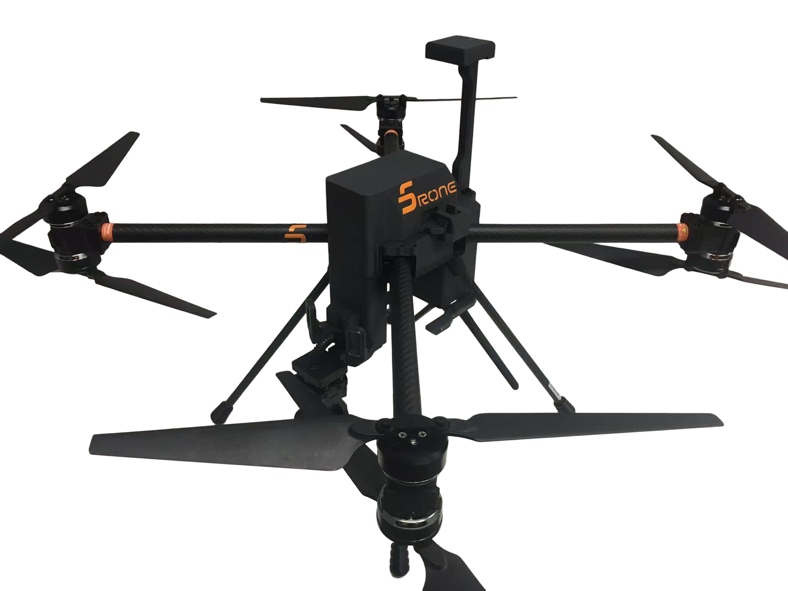

SD V1
정찰 무인기
사전에 지정한 경로를 따라 24시간 끊김 없이 실시간 감시 임무를 수행하는 기체입니다. 국경 경계, 물류 부지 외곽 감시, 주요 기반시설 보호 등에 적합하며, 영상과 비행 데이터를 지속적으로 확보해 안정적인 상황 인식을 제공합니다.
- 짐벌 카메라·스피커·서치라이트 등 임무별 탑재장비를 모듈 방식으로 교체
- 전용 지상관제시스템(GCS)으로 원격 조종, 임무 계획, 자동 비행 실행까지 지원
- 감시·물류·통신 중계 등 다양한 운용체계에 핵심 기체로 통합 가능
| 크기 | 510 × 510 × 440 mm |
|---|---|
| 무게 | 2.5 kg (배터리 제외) |
| 최대 비행속도 | 15 m/s |
| 전원 | 6S 11,000 / 16,800 mAh |
| 최대 내풍 성능 | 지속풍 12 m/s까지 운용 |
| 비행시간 | 최대 45분 |
| 통신 | 16채널, 5.8G / 2.4G 최대 통신거리 15 km 인터페이스: HDMI / USB / LAN |
| 임무 탑재장비 | 짐벌 카메라 / 스피커 / 서치라이트 |
| 지상관제시스템(GCS) | 실시간 비행 모니터링 및 영상 전송 · 비행 데이터 HUD · 실시간 영상 1080P / 30fps |